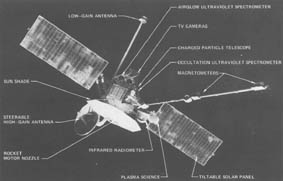

-
Computers in Spaceflight: The NASA
Experience
-
- - Chapter Five -
- - From Sequencers to Computers:
Exploring the Moon and the Inner Planets -
-
- Expanded memory and expanded
functions
-
-
- [146] The new
sequencer had a 9-bit address field, providing a 512 address
limit. Expanding the memory to 512 words did not require a change
in the logic. So JPL added the extra memory for the Mariner
[147] Mars 1971
orbiter missions. Still, the old fixed sequencer remained in
charge of the Mars orbit insertion burn. After the spacecraft
established orbits, however, the ground control center used the
new sequencer to control the imaging of Mars and its moons. The
expanded memory proved sufficient. Preflight estimates for Mariner
VIII specified 150 words of memory and 225 words for Mariner IX,
yet both grew to over 400 words in flight30.
-
- The mission that used the sequencer to its
limits was Mariner Venus Mercury 1973, or Mariner X. Mission
profile called for the spacecraft to turn its imaging equipment on
the earth as it flew toward deep space, do some studies of the
moon in flyby, and then research in the area of Venus during a
gravity assist maneuver that would send it toward Mercury, where
JPL planned three separate encounters with the innermost
planet.
-
-

-
- Figure 5-2. Mariner Venus/Mercury
1973 made the most use of the programmable sequencers. (JPL photo
251-135AC)
-
-
- [148] Due to the more
complex mission requirements, the design team wanted a bigger and
better sequencer, but cost constraints killed any chance of
building a new machine31. Adrian Hooke of JPL, one of the project's
managers, decided to use planned memory updates at regular
intervals. He also instituted a "suspenders and belt" approach to
reliability. The sequencer would not only carry a detailed program
for the next mission phase but also a constantly updated bare
minimum program to complete the mission if the spacecraft lost
contact with the ground. If a command was not received for a
certain time, then the sequencer would follow whatever commands
were in the backup program. Thus, software moved ahead in leap
frog fashion. During the earth-moon phase the Venus backup was
loaded, during the Venus encounter the backup Mercury encounter
sequence was on board, and so on32. Software development was assigned to three
programmers. Ronald Spriestersbach of JPL wrote the near-earth and
post-Mercury sequences, George Elliot of the Boeing Company did
the Venus encounter, and Larry Koga of JPL wrote all three Mercury
encounters33.
-
- During the 1969 missions, most changes and
subroutines were hand-coded and used once. By 1971, the COMGEN
ground computer program that produced memory loads for the
Sequencer could develop blocks of commands that functioned much
like subroutines in a standard computer program or macros in an
assembly language program34 . In 1973, COMGEN resided in an IBM 360/75 computer
that generated the commands and sent them via the NASA
communications net to the appropriate Deep Space Network station
for transmission. By this time, each station had a command
computer, thus ending the voice/manual era35. Another improvement to the Sequencer was that
engineers could do memory checks by comparing a sumword stored in
location 512 to the result of summing the first 511 locations. If
a miscompare occurred, then a location-by-location check for error
could be made36.
-
- The improvements both in the Sequencer and
in programming and ground control techniques were not enough to
ensure its use beyond the Mariner series of spacecraft. In spite
of the success of the long and complicated mission of Mariner X,
JPL's Hooke complained that memory limits were too costly due to
excessive need for optimization and constant relocation of
subroutines37. Besides, the sequencers, regardless of their full
name, were not computers. Spacecraft needed to do on-board
computations, to have more room for software (and, thus, increased
flexibility), and to use the central computer for other functions
such as spacecraft health and safety monitoring done on other
manned and unmanned spacecraft. Some missions intrinsically needed
computers, as, for example, the Viking Mars orbiters and landers
and the Voyager outer planet probes. The computer eventually
designed, built, and used for the Viking Orbiter had its roots in
the programmable sequencer, but it also owed some [149] concepts, at
least in comparison, to a computer built in the research side of
JPL and aimed at the long-duration, complex missions of the
future. The story of that computer research project adds a
necessary perspective for understanding the direction JPL's
on-board computer development took in the 1970s.